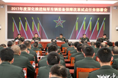

欢迎访问武警第126师政治工作信息网！
登录
注册
设为首页
新闻
时事资讯
武警动态
世界军情
政工要闻
体育新闻
娱乐新闻
军队视频
政工
秘书群联
组织工作
干部工作
宣传工作
保卫工作
纪检工作
影院
政工视频
综艺节目
电视剧
访谈纪实
电影
音乐
红色
华语
日韩
欧美
MV速递
排行
歌手
心理服务
走进心理
心理教育
心理训练
问题解答
心理咨询
心灵驿站
警史馆
综合服务站
活动展评
建言献策
登录
首页 > 新闻 > 时事资讯
时事资讯
政工要闻
武警动态
世界军情
体育新闻
娱乐新闻
军队视频
热点新闻
习近平：开创新形势下国家安全工作新局面
新华社北京2月17日电中共中央总书记、国家主席、中央军委主席、中央国家安全委员会主席习近平2月17日上午在京主持召开国家安全工作座谈会并发表重要讲话，强调要准确把握国家安全形势
17.04.05
特别推荐
Recommend
组织工作四项重点任务
中央"两学一做"常态化制...
功勋犬“道海”
孟建柱：强化责任担当 狠抓工作落实
中共中央政治局委员、中央政法委书记孟建柱29日在京主持召开中央司法体制改革领导小组会议，传达学习习近平总书记在中央全面深化改革领导小组第三十三次会议上的重要讲话精神，研究贯彻落实意见。他强调，政法单位主要负责人要坚持问题导向，强化责任担当，狠抓工作落实 ...
17.04.05
孟建柱：强化责任担当 狠抓工作落实
中共中央政治局委员、中央政法委书记孟建柱29日在京主持召开中央司法体制改革领导小组会议，传达学习习近平总书记在中央全面深化改革领导小组第三十三次会议上的重要讲话精神，研究贯彻落实意见。他强调，政法单位主要负责人要坚持问题导向，强化责任担当，狠抓工作落实 ...
17.04.05
孟建柱：强化责任担当 狠抓工作落实
中共中央政治局委员、中央政法委书记孟建柱29日在京主持召开中央司法体制改革领导小组会议，传达学习习近平总书记在中央全面深化改革领导小组第三十三次会议上的重要讲话精神，研究贯彻落实意见。他强调，政法单位主要负责人要坚持问题导向，强化责任担当，狠抓工作落实 ...
17.04.05
孟建柱：强化责任担当 狠抓工作落实
中共中央政治局委员、中央政法委书记孟建柱29日在京主持召开中央司法体制改革领导小组会议，传达学习习近平总书记在中央全面深化改革领导小组第三十三次会议上的重要讲话精神，研究贯彻落实意见。他强调，政法单位主要负责人要坚持问题导向，强化责任担当，狠抓工作落实 ...
17.04.05

孟建柱：强化责任担当 狠抓工作落实
中共中央政治局委员、中央政法委书记孟建柱29日在京主持召开中央司法体制改革领导小组会议，传达学习习近平总书记在中央全面深化改革领导小组第三十三次会议上的重要讲话精神，研究贯彻落实意见。他强调，政法单位主要负责人要坚持问题导向，强化责任担当，狠抓工作落实 ...
17.04.05
孟建柱：强化责任担当 狠抓工作落实
中共中央政治局委员、中央政法委书记孟建柱29日在京主持召开中央司法体制改革领导小组会议，传达学习习近平总书记在中央全面深化改革领导小组第三十三次会议上的重要讲话精神，研究贯彻落实意见。他强调，政法单位主要负责人要坚持问题导向，强化责任担当，狠抓工作落实 ...
17.04.05
孟建柱：强化责任担当 狠抓工作落实
中共中央政治局委员、中央政法委书记孟建柱29日在京主持召开中央司法体制改革领导小组会议，传达学习习近平总书记在中央全面深化改革领导小组第三十三次会议上的重要讲话精神，研究贯彻落实意见。他强调，政法单位主要负责人要坚持问题导向，强化责任担当，狠抓工作落实 ...
17.04.05
孟建柱：强化责任担当 狠抓工作落实
中共中央政治局委员、中央政法委书记孟建柱29日在京主持召开中央司法体制改革领导小组会议，传达学习习近平总书记在中央全面深化改革领导小组第三十三次会议上的重要讲话精神，研究贯彻落实意见。他强调，政法单位主要负责人要坚持问题导向，强化责任担当，狠抓工作落实 ...
17.04.05
孟建柱：强化责任担当 狠抓工作落实
中共中央政治局委员、中央政法委书记孟建柱29日在京主持召开中央司法体制改革领导小组会议，传达学习习近平总书记在中央全面深化改革领导小组第三十三次会议上的重要讲话精神，研究贯彻落实意见。他强调，政法单位主要负责人要坚持问题导向，强化责任担当，狠抓工作落实 ...
17.04.05
孟建柱：强化责任担当 狠抓工作落实
中共中央政治局委员、中央政法委书记孟建柱29日在京主持召开中央司法体制改革领导小组会议，传达学习习近平总书记在中央全面深化改革领导小组第三十三次会议上的重要讲话精神，研究贯彻落实意见。他强调，政法单位主要负责人要坚持问题导向，强化责任担当，狠抓工作落实 ...
17.04.05
1
2
3
4
...
126